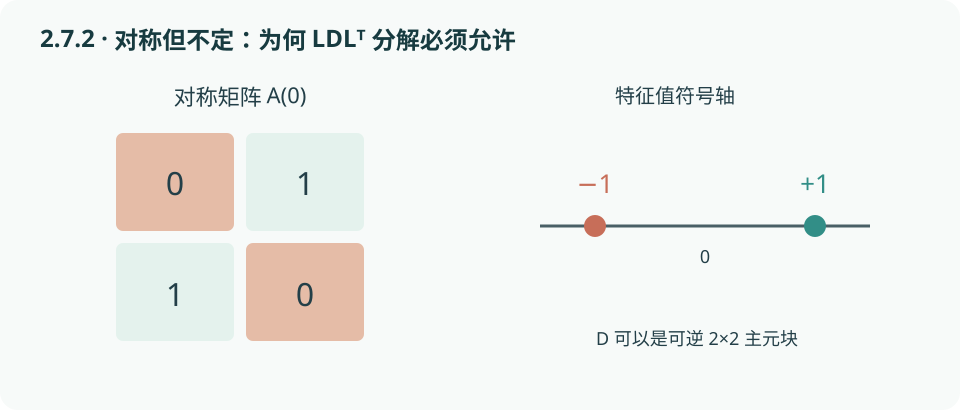

CHAPTER 02 · LINEAR EQUATION SOLVING
对称但不定：为何 LDLᵀ 分解必须允许 2×2 主元块
用一个首对角为零却完全非奇异的矩阵解释 Bunch–Kaufman、特征值符号和对称置换。
对称不定矩阵既可能具有正方向，也可能具有负方向。例如 A=[[0,1],[1,0]] 对应特征值 +1 和 −1：它可逆，却不是 SPD。第一对角元素恰好为零，若一味只用左上角单个主元无法继续；选择整个 2×2 块作为主元，就能保留对称性并完成 LDLᵀ 型分解。
A=[[0,1],[1,0]] 的行列式是 −1，明明可逆，为何普通 Cholesky 与 1×1 对角主元算法都失败？

对称与正定是两个不同性质
实对称保证特征值为实数、存在正交特征向量。SPD 进一步要求所有特征值严格为正；对称不定则至少同时含正和负特征值。对 A=[[0,1],[1,0]]，λ₁=1、λ₂=−1，二次型在不同方向变号。
因此对称性足以用于专门的分解与存储，但不足以保证直接使用 Cholesky 的正平方根路径。
为什么必须允许 D 中出现 2×2 块
对一般对称不定 A，稳定的目标形式可写 PᵀAP=LDLᵀ，其中 L 是单位下三角，D 是由 1×1 和 2×2 对称对角块构成的块对角矩阵。行列交换必须成对作用于行与列，故通过对称置换 P 保持对称结构。
最简单的 A=[[0,1],[1,0]] 可以取 P=I、L=I、D=A：这时 D 本身就是可逆的 2×2 对称主元块。若强制先使用 d₁₁=0 作为 1×1 主元，算法立即在除数为零处失败；这不是矩阵奇异。
Bunch–Kaufman 为什么需要比较对角与非对角元素
在每一轮，稳定对称选主元需要比较候选对角元素与列中较大非对角元素的量级，以决定选用 1×1 还是 2×2 主元，并必要时交换行列。Bunch–Kaufman 算法通过该策略控制消去增长，同时保持对称分解的性质。
与 GEPP 的 PA=LU 不同，LDLᵀ 目标保留对称性；不能拿普通 LU 的单侧行交换直接替代对称行列交换。LAPACK xSYTRF 家族实现了 Bunch–Kaufman 类型分解。
一维参数族显示不定性不会被简单消去
令 A(t)=[[0,1],[1,t]]。特征值为 λ±=(t±√(t²+4))/2，不论有限的实数 t 取何值，λ+>0、λ−<0，而且 det(A)=−1。它始终可逆、始终不定。
交互图移动 t 时，两个特征值点分别保持在零的两侧；这与矩阵第一主元固定为 0 并不冲突。能否做某种分解由主元策略决定，不等于矩阵的可逆性判断。
数值实现与库边界
Python/MATLAB 对照脚本对 2×2 参数族作特征值与解的验证，并用显式 D=A、L=I 检查 LDLᵀ 恒等式。教学例子只演示为何存在 2×2 pivot，不能冒充完整的 Bunch–Kaufman 算法。
生产环境求解大型对称不定矩阵应调用成熟的对称选主元例程，并报告主元与误差情况；如果改用特征分解进行高维求解，成本与稳定性也必须单独评估。
交互探索：A=[[0,1],[1,0]] 的行列式是 −1，明明可逆，为何普通 Cholesky 与 1×1 对角主元算法都失败？
切换解释侧重点，并滑动数值参数，观察清晰定义的模型。
实对称保证特征值为实数、存在正交特征向量。SPD 进一步要求所有特征值严格为正；对称不定则至少同时含正和负特征值。对 A=[[0,1],[1,0]]，λ₁=1、λ₂=−1，二次型在不同方向变号。
所示为数学模型计算而非实测性能；可使用键盘方向键调整滑块。